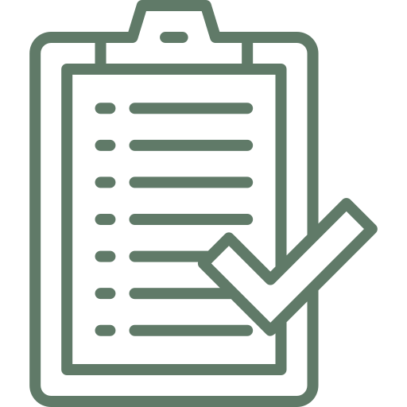
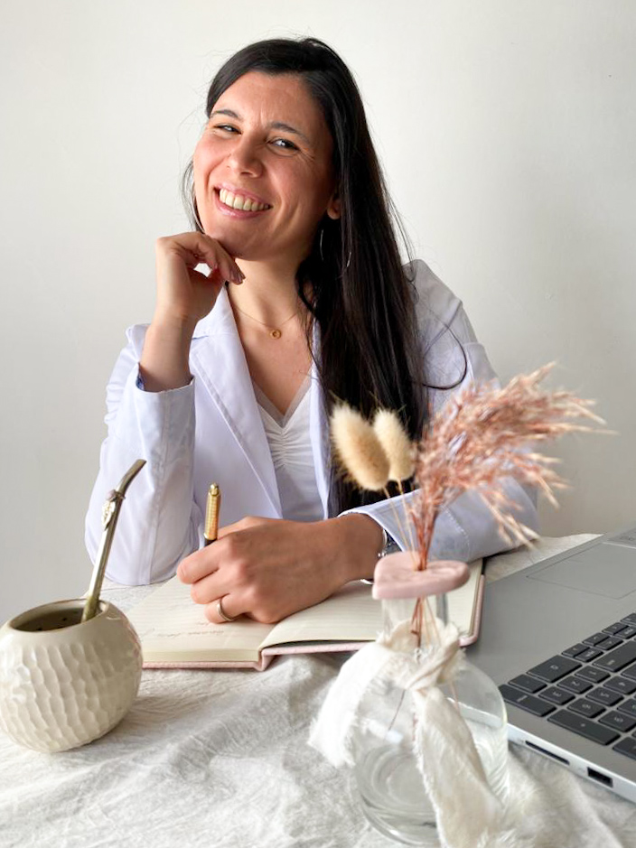
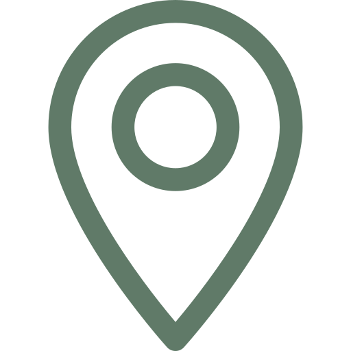

“Mi trabajo consiste en acompañar, guiar y brindar herramientas para mejorar tus hábitos.”

Consultas

Primera consulta
- Se realiza mediante videollamada o consultorio en el día y horario pactado.
- Se realiza la entrevista con el paciente.
- Se confecciona la histoia clínica-nutricional.
- Se plantean metas y objetivos.
- Se brindan herramientas para iniciar el tratamiento, acompañado de material complementario.
Duración de la consulta: 60 minutos.
Puede variar según la necesidad del paciente.

Consulta virtual
- Se realiza mediante videollamada en el día y horariopactado.
- Se realiza la entrevista y confección de historia clínica al igual que de forma presencial.
- Se enseña al paciente como tomar suspropias medidas de peso, talla, entre otras.
- Se proponen intervencion es en el hogar del paciente como, por ejemplo, un recorrido por su heladera, alacenas con el objetivo de conocer sus hábitos y trabajar sobre ello.
- Se analizan fortalezas y debilidades.

Consulta presencial
- Se realiza en el consultorio.
- Se confeccion a la historiaclínica.
- Se realiza la evaluación nutricional y la medición de peso, talla, circunferencia de cintura.
- Se realiza una anamnesis alimentaria y se analizan hábitos del paciente.
- Se plantea en conjunto con el paciente objetivos del tratamiento.
- Se proponen intervenciones de inicio hasta la siguiente visita.

Controles:
- Son quincenales, pero de pendiendo de cada paciente pueden ser semanales o mensuales.
- Se evalúa en cada control si es necesario realizar algún ajuste en las pautas dadas.
- Se trabajan con los objetivos y metas propuestos para esa consulta.
- Se hace énfasis en la educación alimentaria y las dificultades de cada paciente con la alimentación.
Duración aproximada: 30 minutos.
Puede variar según el caso.

Medios de pago
- Consultas virtuales: transferencia bancaria.
- Consultas presenciales: efectivo o transferencia bancaria.
Los aranceles son particulares y se realiza la factura para que el paciente pueda solicitar el reintegro en su obra social.
Consultar honorarios vía el formulario o Whats App.
